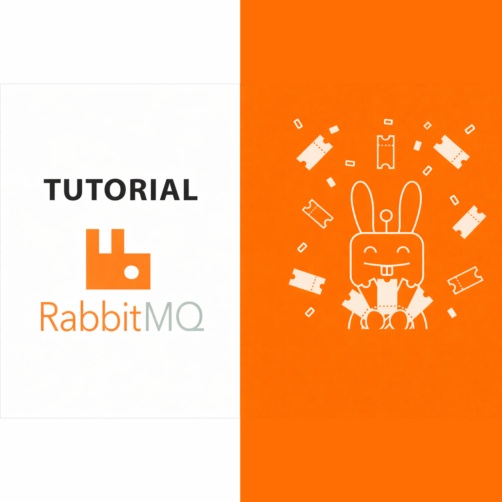

Articles, experiments, and practical notes from backend, DevOps, messaging, and system design work. This is where I publish technical thinking in a form other engineers can verify and reuse.
-
Oct 2024 
ConfigureAwait(false) in .NET: Does It Really Boost Performance?
A hands-on experiment comparing async performance with and without ConfigureAwait(false) in simple and complex scenarios. Surprising results from 1,000 iterations across parallel tasks.
Read Article- C#
- .NET
- Async
-
Sep 2023 
Programmer's Lifehacks: A Curated Cheat Sheet for Developers
A curated collection of handy commands, tools, and configurations for Docker, Kubernetes, Helm, Kafka, PostgreSQL, Git, networking, and more.
Read Article- DevOps
- Docker
- Kubernetes
-
May 2021 
RabbitMQ Fundamentals: A Complete Guide to Exchange Types
A companion article to the YouTube course covering all five RabbitMQ exchange types with practical C# examples: Default, Direct, Fanout, Topic, and Headers.
Read Article- C#
- RabbitMQ
- Messaging
Need help with work like this?
If you are dealing with backend delivery, architecture, or DevOps bottlenecks, let us talk through the current scope.
Discuss Your Project